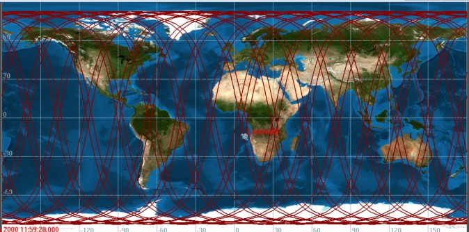
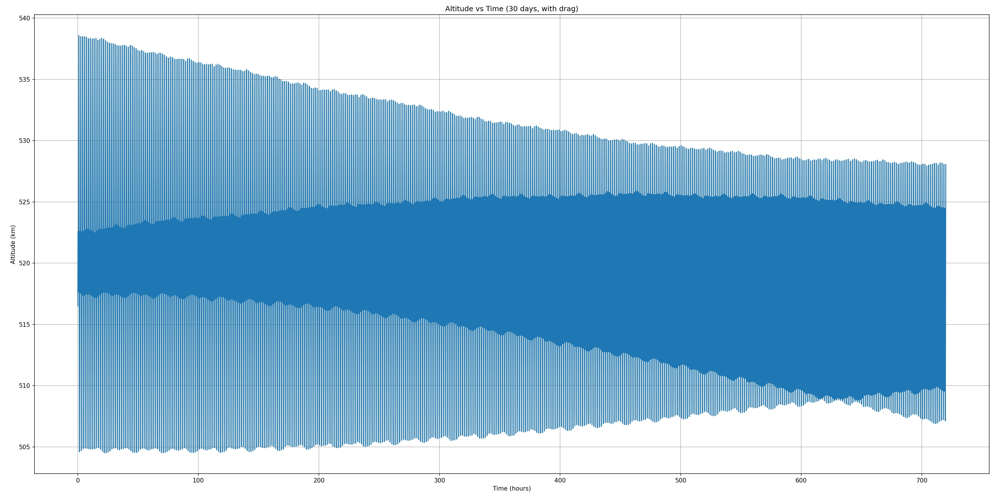

01 · Brief
Modeling orbital motion from Keplerian elements through long-duration propagation.
This project focused on space domain awareness through orbit characterization, numerical propagation, transfer design, and perturbation analysis. The work used representative LEO, sun-synchronous, MEO, GTO, and GEO cases to connect orbital elements to real mission behavior.
The project combined GMAT modeling, custom propagation, coordinate-frame reasoning, ground-track visualization, and analytical checks so the results were not just plotted, but physically interpreted.

02 · Problem
Orbit determination is sensitive to measurement quality and model assumptions.
Small differences in initial conditions, coordinate frames, force models, or propagation assumptions can create large differences in orbit results over time. That makes it important to know exactly what frame a state is expressed in and what physics the propagator includes.
The project required comparing analytical calculations, GMAT outputs, and custom numerical propagation so that trajectory behavior could be explained rather than accepted at face value.
The central challenge was keeping the orbit definitions, coordinate frames, force models, and validation metrics consistent across GMAT, MATLAB, and Python workflows.
03 · Approach
Combining GMAT mission products with custom numerical and analytical checks.
- Defined representative Keplerian element sets for LEO communications, sun-synchronous Earth observation, and MEO navigation cases.
- Configured ground stations and generated visibility timelines, 3D orbit views, ground tracks, and exported state vectors in GMAT.
- Implemented a custom ODE-based two-body propagator and compared it against GMAT trajectory outputs.
- Analyzed periapsis and apoapsis behavior, velocity magnitudes, and trajectory divergence between simplified and higher-fidelity models.
- Designed and validated a GTO-to-GEO transfer, including a combined apogee burn and inclination reduction maneuver.
- Propagated a low Earth orbit with and without atmospheric drag to study semi-major axis evolution and long-duration orbital decay.
04 · Outputs
What the project produced.

- GMAT models and visual products for LEO, SSO, MEO, GTO, and GEO orbit cases.
- Ground station visibility analysis and ground-track outputs over multi-day propagation windows.
- A numerical propagation comparison showing how a simplified ODE model diverges from GMAT when force-model assumptions differ.
- A GTO-to-GEO transfer analysis with an apogee maneuver of approximately 1.68 km/s, validated against GMAT targeting results.
- A perturbation study showing how atmospheric drag produces accumulated orbital decay over longer propagation durations
- A final report tying together orbital elements, frames, transfer design, perturbations, and mission interpretation.
05 · Takeaways
What I took away from the project.
This project built my confidence working with orbital mechanics as an analysis workflow instead of a set of isolated textbook problems. The most useful part was learning to explain why results changed when the model, frame, or perturbation environment changed.
It also reinforced how important validation is in astrodynamics. GMAT, MATLAB, Python, and analytical calculations are all useful, but they only become trustworthy when the assumptions line up and the differences can be explained.